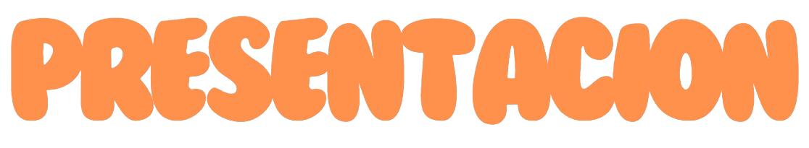
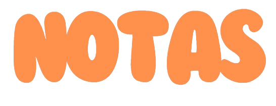
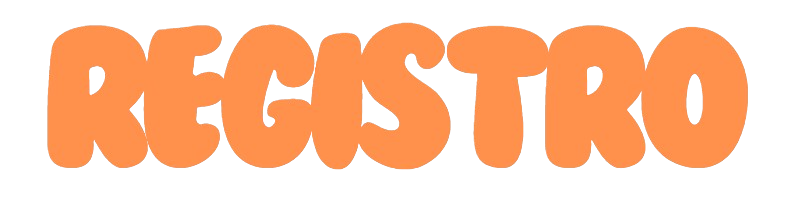

know what the caged bird feels, alas!
When the sun is bright on the upland slopes;
When the wind stirs soft through the springing grass,
And the river flows like a stream of glass;
When the first bird sings and the first bud opes,
And the faint perfume from its chalice steals—
I know what the caged bird feels!
I know why the caged bird beats his wing Till its blood is red on the cruel bars; For he must fly back to his perch and cling When he fain would be on the bough a-swing; And a pain still throbs in the old, old scars And they pulse again with a keener sting— I know why he beats his wing!
I know why the caged bird sings, ah me, When his wing is bruised and his bosom sore,— When he beats his bars and he would be free; It is not a carol of joy or glee, But a prayer that he sends from his heart’s deep core, But a plea, that upward to Heaven he flings— I know why the caged bird sings!